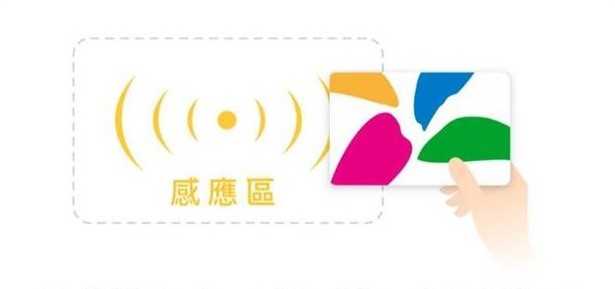
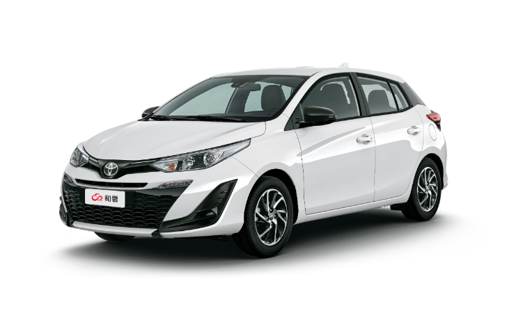
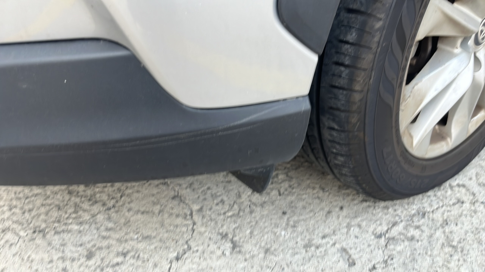
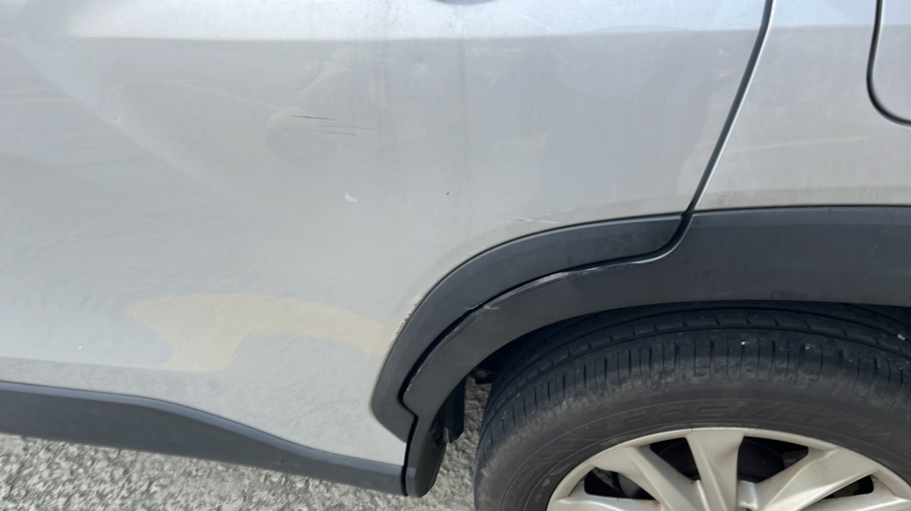
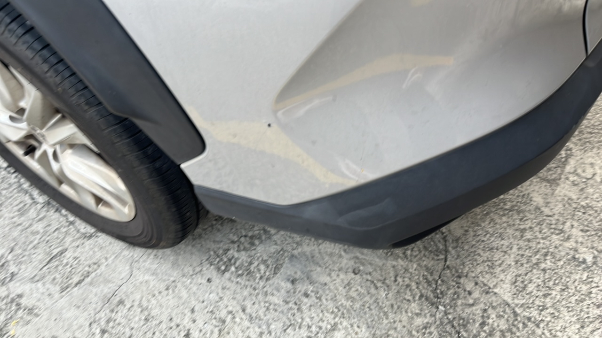
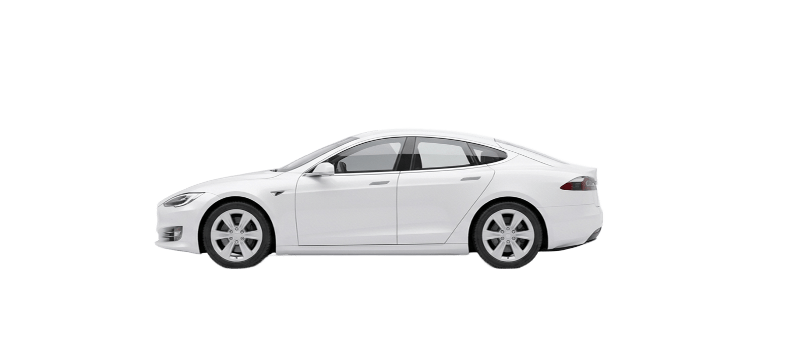

用 悠遊卡 / 一卡通 感應，未來就能用
這張卡片 開關車門 囉！
這張卡片 開關車門 囉！

00 : 59
請在時間內完成靠卡
檢查車輛四周
請仔細檢查有無損傷、凹陷等，
完善拍照可保障自身權益。
車號：RDZ-6925
這台車現在
看起來有問題嗎？
您剛才環顧車輛四周時，
有沒有發現前一位使用者留下的損傷？
以下為前一位使用者的車損紀錄，系統已完整建檔，您無須對此負責：
已標記部位：左前、左後



✦ 誠實回報可獲得綠色里程點數
了解，這台車有狀況
您可以繼續租這台車，或改租其他車輛。
無論哪一種，都請幫我們拍下問題處，
讓下一位使用者不會踩到同一個坑。

✦ 誠實回報可獲得綠色里程點數
車號：RDZ-6925
環境目前看起來很暗，建議開啟閃光燈拍照 ↓
車身拍照
請拍攝車輛四角（含車牌）
請將手機橫拿再拍攝
橫式拍攝才能同時涵蓋完整車身與車牌，也讓後續辨識的方向一致。
查看租車合約›
查詢/邀請共同承租人
還有人未回覆邀請哦！快通知對方至通知中心確認
›
預設還車時間2/20 10:00 ✎
確認簽名吳致賢
安心服務 · $50/hr
已加購
行車記錄器 · $100/日
已加購
✓我已確認租車合約無誤
✓我確實遵守「酒後不駕車」的安全法則
✓我同意不懸掛偽造、已吊扣、報廢、其他車輛之車牌，及污損車牌行為
✓我同意訂單異動時，由和雲行動服務代為處理發票及銷貨退回證明單，以加速退款作業
✓我同意行車紀錄器啟用須知
同站
RDZ-6925
已使用時間00 : 00 : 12
預計還車時間12/25 (四) 18:00
還車站點iRent 金華公園站 ›
台北市大安區金華街254巷1號－B1
🚗車況回報
▶教學影片
◎操作教學
Ⓟ臨時停車
🔑開關門卡
⌚配對裝置
☰租車合約
▤行車紀錄
✦
已收到回報
設定卡片後，在訊號差的區域也能解鎖哦
這幾張可能不夠清楚
補拍後車況記錄會更完整，日後若有爭議也更能保障您的權益。
送出前請確認
本次車況記錄缺少以下項目：
這些缺項可能導致日後發生車損爭議時，無法證明車輛在您取車當下的實際狀況。 若後續經 AI 判定及人工複核確認車輛存在車損，相關責任認定將以現有照片為準。